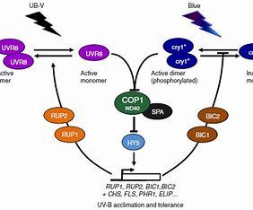

Light is not only the energy source for photosynthesis in plants, but also an important signal for regulating plant growth and development and adapting to the environment. Plant light responses, such as seedling photomorphogenesis, photoperiod regulation of flowering, and shade avoidance, are mainly mediated by photoreceptors. Cryptochrome (CRY) is a type of blue light receptor that mediates the regulation of blue light and photoperiod on plant growth and flowering and other developmental processes. Our research group mainly uses plants (Arabidopsis thaliana, bamboo) as research objects, using plant physiology, biochemistry, molecular genetics and various omics methods to study the photobiochemistry and signal transduction of cryptochrome and the molecular mechanism of light-responsive plant growth and development.
版权所有：蛋白组学研究中心 电话:0591-86392267
地址：中国 福建省 福州市 仓山区 上下店路15号